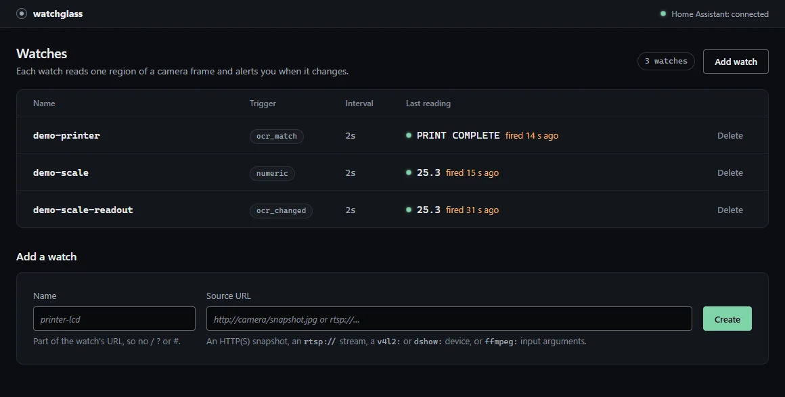
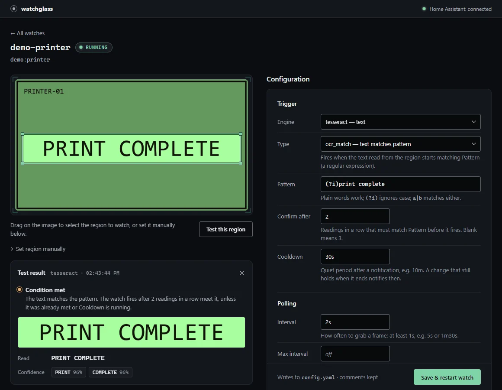
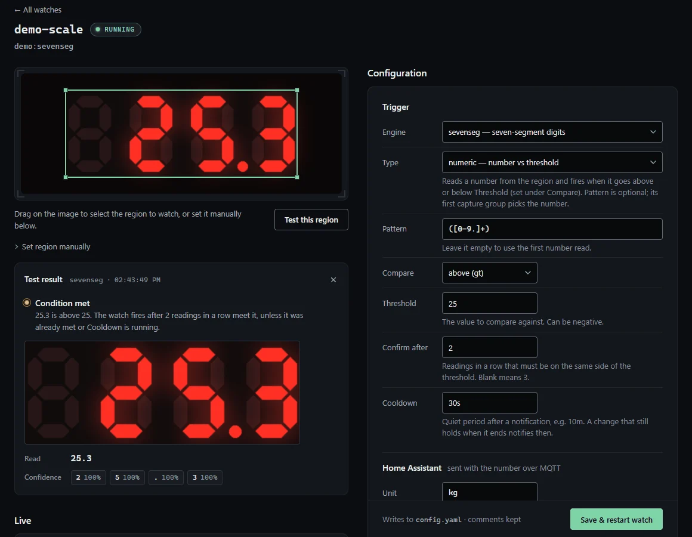

watchglass
Get a notification when a screen changes, even one with no API.
- Role
- Solo developer and maintainer.
- Stack
- Go, single binary, Docker image (amd64, arm64, armv7), Tesseract OCR, ffmpeg, MQTT
- Released
- v0.1.8, September 29, 2026.
The problem
Heat pump panels, 3D printers and bench scales show their state on a screen and nowhere else. The number is right there, and nothing on the network can read it.
What it does
- Draw, test, save. Drag a box over the live frame and see what it reads before saving. No YAML.
- Three readers. Text through Tesseract, seven-segment digits through a built-in decoder, or plain pixel change.
- No flapping. A reading has to hold for a few polls before it counts, and a cooldown stops repeat pings.
- Notifications. ntfy with the cropped region attached, Discord, Telegram, Slack, Pushover, email and webhooks.
- Home Assistant. Each watch appears over MQTT as a device, and a number becomes a sensor it can graph.
- Camera health. One alert when a camera goes down and one when it comes back.
- Small. Snapshot URLs, MJPEG, RTSP, webcams or your own screen, in about 55 MB of RAM with no GPU.
Try it
The demo needs no camera. Two demo watches fire about 20 seconds after it starts, at http://127.0.0.1:8080.
docker run --rm -p 127.0.0.1:8080:8080 -e WATCHGLASS_DEMO=1 ghcr.io/darrenhuai/watchglassScreenshots


